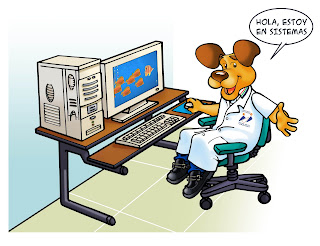
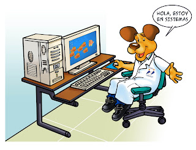

El área pretende en este mundo de constantes cambios, fortalecer las capacidades de los estudiantes en el manejo de las Tics a través de todos los temas planteados en el currículo. Como objetivos tenemos Impartir fundamentos teóricos y prácticos en el área, estimulando en el estudiante su ingenio, capacidad analítica, creativa, y el desarrollo de hábitos de lectura e investigación. También se busca fomentar el desarrollo vocacional y la formación profesional, de acuerdo a las aptitudes y aspiraciones del estudiante y las necesidades de la sociedad, promoviendo el espíritu de investigación y consulta bibliográfica, preparándolo en competencias para el sector laboral, teniendo en cuenta las posibilidades que el área le ofrece en este campo. esta especialidad puede aportar mucho a tu futuro social y laboral
en este taller ampliarás tus conocimientos así como te serán proporcionadas las herramientas necesarias para manipularla.te ayuda al manejo de aplicaciones y programas instalados en dichas herramienta y los servicios de uso general como el correo electrónico. Algunas de las actividades que se desarrollaran en sistemas son: -Realizar mantenimiento correctivo, preventivo y predictivo en los equipos. -Gestionar las cuentas de usuario y asignar recursos a las mismas. -Instalar, configurar y dar mantenimiento a los servicios como son proxy web, X.500, FTP y correo electrónico. A lo largo del bachillerato se trabajarán muchos temas como,diapositivas, gráficos y problemas en Excel, teoría, uso de las aplicaciones de Google, uso de códigos html, páginas web entre otras cosas. A Continuación hemos recogido información de estudiantes que se graduaron de la institución y estaban en esta especialidad. ¿Qué aspectos positivos tiene la especialidad que elegiste? Respuesta 1 anonima = Los programas manejados Respuesta 2 anomnima = Te enseñan a manejar programas Respuesta 3 anonimo = Conocer más acerca de las herramientas digitales que nos rodean ¿Qué aspectos negativos tiene esa especialidad? R1/los computadores ya que no sirven adecuadamente y no permiten el correcto aprendizaje. R2/Los equipos estaban muy viejos, eran muy poquitos, no había conexión a internet. R3/Se convierten en elementos esclavizantes para aquellos que no tienen autocontrol ¿La especialidad que elegiste te ha servido de ayuda en tu vida cotidiana? explica. R1/Sí, porque son bases para un trabajo en el siglo XXI R2/Si, tengo una idea base de cómo funcionan algunos programas que se usan mucho en el campo laboral R3/No, ya que la carrera que elegí, está muy lejana al uso de estás herramientas digitales.